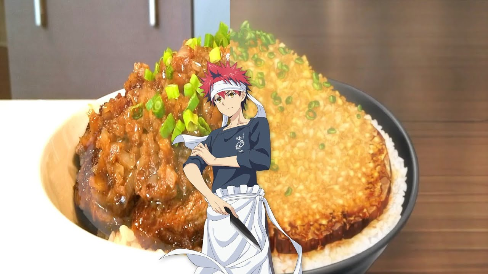

Chaliapin Steak Don

Description
Chaliapin steak, Soma-style! You may not be in a Food Wars anime, but that’s no reason to not enjoy its tantalising beef don recipe!
Read more on original source: Link to full recipe
Ingredients
- 250 g sirloin steak
- 1½ pc onion diced
- 300g short-grain Japanese rice, cooked
- 1 tablespoon pickled plum paste (umeboshi)
- salt
- pepper
- potato starch
- green onions, chopped
Sauce
- 4 tablespoon red wine
- 1 tablespoon soy sauce
- 2 tablespoon butter
How to win this Shokugeki
- Mince the onion. Tenderise the steak, then cover with chopped onions. Rest it for an hour. Then remove onions and sprinkle the meat with salt and pepper.
- Melt butter in a skillet and sauté the onions. Add salt and pepper. Set aside the onion.
- Add some cooking oil to skillet. Cook the beef till golden brown on both sides. Remove the beef and let it rest on the side.
- Add red wine to the skillet, mixing with meat juice. Once reduced, add the onions again and sauté. Then, add butter, soy sauce and potato starch. Let the flavours blend into a sauce.
- Next, mix umeboshi with cooked rice. Then, slice the steak meat into bite-sized pieces. Arrange the slices on your rice.
-
- Finally, pour the sauce with onions on the top of your Chaliapin steak and rice. Sprinkle chopped green onion on your donburi. Serve and enjoy while it is hot!